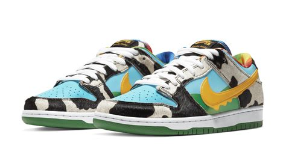
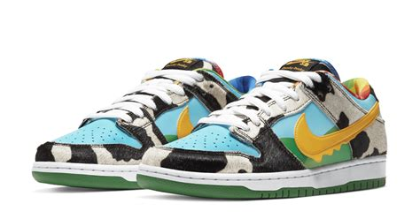

Resume
- Education
-
Brigham Young University Marriott School of Business
- 2021-2024
- Pre-Business, Applying to the Marketing program in June 2022
- Skills
- Database design and development
- Entity-relationship diagramming
- Structured Query Language (SQL)
- Tableau
- Excel solver, pivot tables, and charts
- HTML, CSS, Bootstrap
- Visual basic for applications (VBA), and programming in excel
- Working in and leading groups of creative people
- Creative design, scriptwriting, advertisement layout
- Networking
- Providing training sessions for co-workers and those I am responsible for
- Experience
- Volunteer representative for the Church of Jesus Christ of Latter-Day Saints
- Intern for the Provo Riverblades
- Intern for Citywide Consultants
- Handyman contractor
- Other
- President of the Knight Owls a capella group
- BYU Marketing Association
Hobbies

 

Batman Since I was 14 I have loved all things Batman. I know just about everything about the history of Batman, have read all the major comics, played all the video games, and seen all the movies several times over. Click here to learn more about my favorite comic, Batman: the Long Halloween.
Basketball
I started playing basketball with my neighborhood friends growing up and have been hooked ever since. Personally I am a knicks fan, which is painful, Stephen A Smith explains it well
Sneakers
I am a certified sneakerhead. I personally own a modest collection of 14 sneakers, but I love the history, specifications, and culture. I often cannot help but point out what kind of sneakers people are wearing out in public to people that I am around.
Contact Info
Phone: 645-465-8008 |
Email: Pls_Give_Good_Grade@plsplspls.com